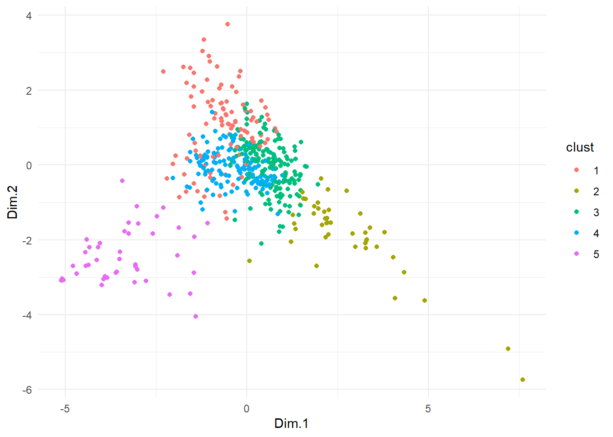

library(tidyverse) # Manipulation des données
library(sf) # Manipulation des données spatiales
library(mapsf) # Réalisation de carte
library(readxl) # Importation de données Excel
library(kableExtra) # Réalisation de tableau TP 10 - Classification
Objectifs
Ce tp a pour objectif de réaliser une classification ascendante hiérarchique des secteurs statistiques de Bruxelles en utilisant des variables de la structure de la propriété des logements mis en location.
Ressources utilisées:
1. Préparation
De façon maintenant habituelle:
Et deux packages développés pour réaliser des ACP et visualiser les résultats:
library(FactoMineR)
library(factoextra)Welcome! Want to learn more? See two factoextra-related books at https://goo.gl/ve3WBaPour ce TP, on utilisera également le packages JLutils:
#library(devtools)
#devtools::install_github("larmarange/JLutils")
library(JLutils)Registered S3 method overwritten by 'GGally':
method from
+.gg ggplot2Pour cette classification, on utiliser des indicateurs construits à partir des données du cadastre (1 janvier 2015) utilisée dans ma thèse (https://difusion.ulb.ac.be/vufind/Record/ULB-DIPOT:oai:dipot.ulb.ac.be:2013/359086/Holdings)
Les variables utilisées sont:
cd_sector = code secteur statistique
NB_LOG = nombre de logements total
NB_LOGLOUE_TOT = nombre de logements loués total
NB_LOCDOM = nombre de logements loués à domicile
prop_occup = proportion de propriétaires occupants
prop_LOCDOM = proportion de logements loués à domicile
prop_LOC_HBX = proportion de logements loués par des propriétaires habitants en dehors de la région de Bruxelles
dist_200 = proportion de logements loués par des propriétaires domiciliés à moins de 200 m
cinq_plus = proportion de logements loués possédés par des propriétaires possédants 5 logements ou plus à Bruxelles
vingt_plus = proportion de logements loués possédés par des propriétaires possédants 20 logements ou plus à Bruxelles
log_sociaux = proportion des logements sociaux parmi les logements loués
entrep_sprl_sa = proportion des logements possédés par des entreprises privées parmi les logements loués
cadastre <- read_delim( "../data/cadastre_2015_secteurs.csv", delim=";") %>%
filter(NB_LOGLOUE_TOT>=200)2. ACP
Pour réaliser la classification, on va d’abord réaliser une classification. Cela nous permet d’éliminer le bruit.
pca<-PCA(cadastre[,6:12], row.w =cadastre$NB_LOGLOUE_TOT,ncp = NULL)
On se demande combien de composante garder: les 3 premières représentes 80% de la variance.
fviz_screeplot(pca, ncp=10)
pca$eigOn peut joindre les socres des ACP aux données
cadastre<-bind_cols(cadastre,pca$ind$coord)3. Classification ascendente hiérarchique
3.1. Calcul de la classification
On extrait les scores des trois premières composantes qu’on va utiliser dans la classification:
score<-pca$ind$coord[,1:3]On calcul une matrice de distance euclidienne:
dist <- dist(score, method = "euclidean")On réalise la classification avec la méthode de Ward:
hcpc <- hclust(dist, method = "ward.D" )3.2. Choix du nombre de classe
On peut réaliser le dendogramme :
plot(hcpc, cex = 0.6, hang = -1)
Ainsi que le graphique d’inertie:
inertie <- sort(hcpc$height, decreasing = TRUE)
plot(inertie[1:20], type = "s", xlab = "Nombre de classes", ylab = "Inertie")
Il apparaît ici que le gain pour ajouter une classe supplémentaire diminue fortement après la 5ème classe
On définit donc le paramètre k=5:
#png(filename = "TP10/dendogramme.png")
plot(hcpc, cex = 0.6, hang = -1)
rect.hclust(hcpc , k = 5, border = 2:6)
#dev.off()Il existe une fonction de JLutils qui permet de claculer le nombre de classes “optimale”.
best.cutree(hcpc)[1] 43.3. Visualisation des résultats
3.3.1. Extraire les groupes
On peut alors associer chaque individus (ici les secteurs statistiques) à chaque un groupe:
hcpc_indiv <- cutree(hcpc, k = 5)On peut alors rapatrier les résultats sur les données de bases:
cadastre<-cadastre %>%
mutate(clust= as.factor(hcpc_indiv))3.3.2. Un graphique selon les groupes
On peut réaliser un graphique où on place chaque individus (ici les secteurs statistiques) sur les deux dimensions construites lors de l’ACP et on colorie les points selon la classe:
ggplot(data=cadastre,
aes(x=Dim.1, y=Dim.2, color=clust)) +
geom_point()+
theme_minimal()
3.3.3. Une carte des groupes
On importe les secteurs statistiques et garde que les secteurs bruxellois:
secteurs_stats<- st_read ("../data/sh_statbel_statistical_sectors_31370_20230101.gpkg") %>%
filter(tx_rgn_descr_fr=="Région de Bruxelles-Capitale")Reading layer `secteurs_stats2023' from data source
`C:\Users\hugop\Nextcloud\git\GEO_QUANTI\data\sh_statbel_statistical_sectors_31370_20230101.gpkg'
using driver `GPKG'
Simple feature collection with 19795 features and 31 fields
Geometry type: MULTIPOLYGON
Dimension: XY
Bounding box: xmin: 21991.63 ymin: 21162.16 xmax: 295167.1 ymax: 244027.2
Projected CRS: BD72 / Belgian Lambert 72On construit un objet spatial communes pour la cartographie:
communes<-secteurs_stats %>%
group_by(tx_munty_descr_fr) %>%
summarise(geom=st_union(geom))On joint les groupes aux secteurs statistiques:
secteurs_stats_cad<- secteurs_stats %>%
left_join(cadastre, by="cd_sector")On réalise la carte:
# On peut aussi définir une palette de couleur pour facilité la lecture
pal <- c("red", "blue", "purple", "green", "orange")
# mf_export(x = secteurs_stats_cad ,
# filename =paste0("TP10_typo/carte_typo.png" ),
# width = 900)
mf_map(x = secteurs_stats, col = NA, border = "gray25", lwd = 0.3)
mf_map(secteurs_stats_cad ,
var= c("NB_LOGLOUE_TOT","clust"),
type="prop_typo",
inches = 0.08,
pal= pal,
lwd=0.3,
add=T)
mf_map(x = communes, col = NA, border = "gray25", lwd = 1, add=T)
#dev.off()3.3.4. Un tableau de statistique pour chaque groupes
On réalise des statistiques (ici moyenne pondérée par le nombre de logements loués) par groupes:
tab<-cadastre %>%
group_by(clust) %>%
summarise(
log_sociaux= weighted.mean(log_sociaux,NB_LOGLOUE_TOT ),
entrep_sprl_sa= weighted.mean(entrep_sprl_sa,NB_LOGLOUE_TOT ),
prop_LOCDOM= weighted.mean(prop_LOCDOM,NB_LOGLOUE_TOT ),
prop_LOC_HBX = weighted.mean(prop_LOC_HBX,NB_LOGLOUE_TOT ),
dist_200 = weighted.mean(dist_200,NB_LOGLOUE_TOT ),
cinq_plus= weighted.mean(cinq_plus,NB_LOGLOUE_TOT ),
vingt_plus= weighted.mean(vingt_plus,NB_LOGLOUE_TOT ) )
# On ajoute une ligne pour la moyenne:
moyenne_total<-cadastre %>%
summarise(
log_sociaux= weighted.mean(log_sociaux,NB_LOGLOUE_TOT ),
entrep_sprl_sa= weighted.mean(entrep_sprl_sa,NB_LOGLOUE_TOT ),
prop_LOCDOM= weighted.mean(prop_LOCDOM,NB_LOGLOUE_TOT ),
prop_LOC_HBX = weighted.mean(prop_LOC_HBX,NB_LOGLOUE_TOT ),
dist_200 = weighted.mean(dist_200,NB_LOGLOUE_TOT ),
cinq_plus= weighted.mean(cinq_plus,NB_LOGLOUE_TOT ),
vingt_plus= weighted.mean(vingt_plus,NB_LOGLOUE_TOT ) )
# On place le résultat dans la ligne donc le numéro est équivalent au nombre de ligne dans le tableau plus une (nrow()+1) pour les colonnes de 2 à 8:
tab[nrow(tab)+1 , 2:8]<-moyenne_total
#On multiplie toutes les cellules par 100 et on arrondi avec un 1 chiffre après la virgule:
tab[,2:8]<-round(100*tab[,2:8],1)On peut alors donner des noms aux groupes
tab$clust<-as.character(tab$clust)
tab<- tab %>%
mutate(clust=case_when (
clust ==1~"1. Propriétaires à proximité",
clust ==2~"2. Grands propriétaires et entreprises",
clust ==3~"3. Type moyen",
clust ==4~"4. Propriétaires non-Bruxellois",
clust ==5~"5. Logements sociaux",
is.na(clust)~"Moyenne"))
kable(tab)| clust | log_sociaux | entrep_sprl_sa | prop_LOCDOM | prop_LOC_HBX | dist_200 | cinq_plus | vingt_plus |
|---|---|---|---|---|---|---|---|
| 1. Propriétaires à proximité | 10.2 | 6.7 | 27.6 | 19.8 | 67.3 | 29.6 | 5.3 |
| 2. Grands propriétaires et entreprises | 3.4 | 26.0 | 5.8 | 26.4 | 26.4 | 47.3 | 20.1 |
| 3. Type moyen | 2.8 | 13.1 | 14.0 | 32.1 | 52.9 | 32.9 | 8.2 |
| 4. Propriétaires non-Bruxellois | 3.1 | 10.4 | 9.6 | 39.2 | 32.7 | 19.7 | 3.4 |
| 5. Logements sociaux | 78.0 | 1.9 | 2.4 | 7.1 | 7.8 | 13.7 | 3.3 |
| Moyenne | 10.4 | 11.1 | 15.0 | 28.1 | 46.8 | 29.1 | 7.1 |
Le package JLutils permet également de colorer le dendogramme:
# library(JLutils)
A2Rplot(hcpc, k =5, boxes = T, show.labels = F,col.up = "gray50",
col.down = pal, main="Dendrogramme - 5 classes")3.3.5. Comparaison avec une autre variable
On importe l’indice synthétique de difficulté:
ind_synth <-read_delim("../data/indice_synthetique.csv", delim=";")Rows: 7752 Columns: 2
── Column specification ────────────────────────────────────────────────────────
Delimiter: ";"
chr (1): Secteur statistique
dbl (1): Indice synthétique de difficulté 2010
ℹ Use `spec()` to retrieve the full column specification for this data.
ℹ Specify the column types or set `show_col_types = FALSE` to quiet this message.indice_sec<-secteurs_stats %>%
left_join(ind_synth, by=c("cd_sector"="Secteur statistique")) %>%
filter(tx_rgn_descr_fr=="Région de Bruxelles-Capitale")
mf_map(indice_sec,
var="Indice synthétique de difficulté 2010",
type="choro",
pal= "Viridis",
nbreaks=5)
On joint l’indice synthétique de difficulté avec les données sur base du secteur statistique:
cadastre<- cadastre %>%
left_join(ind_synth,by= c("cd_sector"= "Secteur statistique"))On réalise un graphique avec des boxplot:
ggplot(data=cadastre,aes(x=clust,
y=`Indice synthétique de difficulté 2010`,
weight=NB_LOGLOUE_TOT,
fill=clust)) +
geom_boxplot(fill=pal) +
labs(title ="Relation classification et indice synthétique de difficulté",
x= " ",
y= "Indice synth. de diff. 2010")+
theme_minimal()
On peut en conclure qu’il y a un lien entre la division sociale de l’espace et la structure de la propriété des logements loués. Les secteurs du groupe 1 sont plus en difficulté que les autres secteurs, surtout les 3 et 4. Le secteurs centraux (2) ont des indices intermédiaires et certains secteurs de logements sociaux (5) sont très mixtes d’où leur forte dispersion.